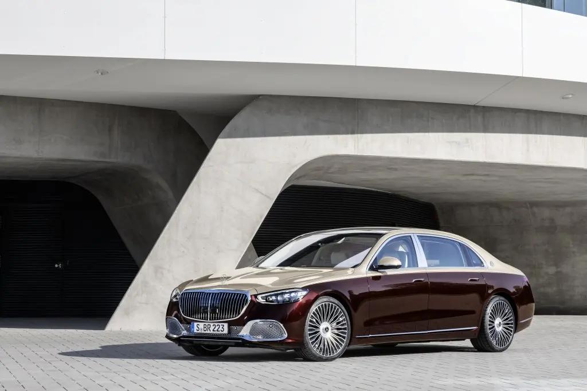

Maybach · MY27
Mercedes-Maybach S-Class
6개 연식·트림 · 권장 소비자가 31,700만원 ~ 47,940만원 (VAT 포함). 트림을 선택하면 제원·옵션·장비가 함께 바뀝니다.

Official highlights
Mercedes-Maybach S-Class
Mercedes-Maybach S-Class는 크롬·투톤 외관과 퍼스트 클래스 뒷좌석으로 완성된 최상위 럭셔리 세단입니다.
컴포트 도어
뒷좌석 전동 컴포트 도어.
뒷좌석 웰니스
다리 마사지와 목·어깨 쿠션.
투톤 페인트
Mercedes-Maybach 전용 투톤 외관(사양별).
출처: 메르세데스-벤츠 코리아 공식 홈페이지 · 검색 색인 요약 기반, 최신 내용은 공식 페이지에서 확인. 사양·옵션은 세부 모델에 따라 다르게 적용되며 일부는 유료 사양입니다.
Trim & price
트림부터 비교하세요
연식: MY27 · MY26
MY27 · 선택한 트림
Mercedes-Maybach S 580
권장 소비자가 31,700만원 (317,000,000원) · VAT 포함 · 기준: 2026년 10월 14일 메르세데스-벤츠 코리아 공식 가격표
제원
이 트림의 상세 제원은 공개 자료 확정 후 반영됩니다. 상담 시 최신 제원표로 안내해 드립니다.
옵션 · 색상
기본 = 기본 적용 · 선택/유료 선택 = 주문 시 선택 · 미적용 = 해당 트림 미적용
외장 컬러 (21)
032UMANUFAKTUR 미스틱 블루유료 선택040U블랙선택041UMANUFAKTUR 그라파이트 그레이유료 선택056UMANUFAKTUR 나이트 블랙 마그노유료 선택188U베르데 실버선택190UMANUFAKTUR 실리콘 그레이 솔리드유료 선택197U옵시디안 블랙기본255UMANUFAKTUR 올리브 메탈릭유료 선택378UMANUFAKTUR 베르데 실버 마그노유료 선택595U노틱 블루선택659UMANUFAKTUR 오팔라이트 화이트 마그노유료 선택677UMANUFAKTUR 칼라하리 골드 마그노유료 선택715U웜 그레이 솔리드선택771U벨벳 브라운선택802UMANUFAKTUR 칼라하리 골드 메탈릭유료 선택831U그라파이트 그레이선택885UMANUFAKTUR 오팔라이트 화이트 브라이트유료 선택922U하이 테크 실버선택934UMANUFAKTUR 빈티지 블루유료 선택989U에메랄드 그린선택993UMANUFAKTUR 파타고니아 레드유료 선택실내 시트·소재 (9)
533A마이바흐 익스클루시브 나파 레더 , 블랙기본534A마이바흐 익스클루시브 나파 레더 , 브라운선택535A마이바흐 익스클루시브 나파 레더 , 마키아토 베이지 / 브론즈 브라운 펄선택941AMANUFAKTUR 마이바흐 익스클루시브 나파 레더 , 토바코 / 블랙미적용991AMANUFAKTUR 마이바흐 익스클루시브 나파 레더 , 딥 화이트 / 블랙미적용992AMANUFAKTUR 마이바흐 익스클루시브 나파 레더 , 요트 블루 / 블랙미적용993AMANUFAKTUR 마이바흐 익스클루시브 나파 레더 , 콘 옐로우 / 블랙미적용996AMANUFAKTUR 마이바흐 익스클루시브 나파 레더 , 레이크그린 / 블랙미적용997AMANUFAKTUR 마이바흐 익스클루시브 나파 레더 , 카민 레드 / 블랙미적용기타 옵션 (13)
C06Maybach 로고가 새겨진 MANUFAKTUR 헤드 레스트미적용C50센터 콘솔 MANUFAKTUR 레터링미적용C51뒷좌석 쉘프 MANUFAKTUR 레터링미적용C07Maybach 로고가 새겨진 MANUFAKTUR 하이 파일 플로어 매트미적용C12마이바흐 투톤 페인트 , 옵시디안 블랙 / 셀레나이트 그레이미적용C23마이바흐 투톤 페인트 , 옵시디안 블랙 / 칼라하리 골드미적용C24마이바흐 투톤 페인트 , 에메랄드 그린 / 모하비 실버미적용C28마이바흐 투톤 페인트 , 노틱 블루 / 하이 - 테크 실버미적용C31마이바흐 투톤 페인트 , 하이 - 테크 실버 / 셀레나이트 그레이미적용C33마이바흐 투톤 페인트 , 옵시디안 블랙 / 하이 - 테크 실버미적용C37마이바흐 투톤 페인트 , 오팔라이트 화이트 / 옵시디안 블랙미적용C38마이바흐 투톤 페인트 , 오팔라이트 화이트 / 베르데 실버미적용C41마이바흐 투톤 페인트 , 옵시디안 블랙 / 벨벳 브라운미적용장비 구성
디스플레이·오디오 (12)
주행·승차감 (2)
안전·주차 (18)
외관·생활 편의 (9)
시트·공간 (11)
실내 편의 (12)
MY27 · 선택한 트림
Mercedes-Maybach S 580 MANUFAKTUR
권장 소비자가 33,600만원 (336,000,000원) · VAT 포함 · 기준: 2026년 10월 14일 메르세데스-벤츠 코리아 공식 가격표
제원
이 트림의 상세 제원은 공개 자료 확정 후 반영됩니다. 상담 시 최신 제원표로 안내해 드립니다.
옵션 · 색상
기본 = 기본 적용 · 선택/유료 선택 = 주문 시 선택 · 미적용 = 해당 트림 미적용
외장 컬러 (21)
032UMANUFAKTUR 미스틱 블루미적용040U블랙선택041UMANUFAKTUR 그라파이트 그레이미적용056UMANUFAKTUR 나이트 블랙 마그노미적용188U베르데 실버선택190UMANUFAKTUR 실리콘 그레이 솔리드미적용197U옵시디안 블랙선택255UMANUFAKTUR 올리브 메탈릭미적용378UMANUFAKTUR 베르데 실버 마그노미적용595U노틱 블루선택659UMANUFAKTUR 오팔라이트 화이트 마그노미적용677UMANUFAKTUR 칼라하리 골드 마그노미적용715U웜 그레이 솔리드선택771U벨벳 브라운선택802UMANUFAKTUR 칼라하리 골드 메탈릭미적용831U그라파이트 그레이선택885UMANUFAKTUR 오팔라이트 화이트 브라이트기본922U하이 테크 실버선택934UMANUFAKTUR 빈티지 블루미적용989U에메랄드 그린선택993UMANUFAKTUR 파타고니아 레드미적용실내 시트·소재 (9)
533A마이바흐 익스클루시브 나파 레더 , 블랙미적용534A마이바흐 익스클루시브 나파 레더 , 브라운미적용535A마이바흐 익스클루시브 나파 레더 , 마키아토 베이지 / 브론즈 브라운 펄미적용941AMANUFAKTUR 마이바흐 익스클루시브 나파 레더 , 토바코 / 블랙기본991AMANUFAKTUR 마이바흐 익스클루시브 나파 레더 , 딥 화이트 / 블랙선택992AMANUFAKTUR 마이바흐 익스클루시브 나파 레더 , 요트 블루 / 블랙선택993AMANUFAKTUR 마이바흐 익스클루시브 나파 레더 , 콘 옐로우 / 블랙선택996AMANUFAKTUR 마이바흐 익스클루시브 나파 레더 , 레이크그린 / 블랙선택997AMANUFAKTUR 마이바흐 익스클루시브 나파 레더 , 카민 레드 / 블랙선택기타 옵션 (13)
C06Maybach 로고가 새겨진 MANUFAKTUR 헤드 레스트기본C50센터 콘솔 MANUFAKTUR 레터링기본C51뒷좌석 쉘프 MANUFAKTUR 레터링기본C07Maybach 로고가 새겨진 MANUFAKTUR 하이 파일 플로어 매트기본C12마이바흐 투톤 페인트 , 옵시디안 블랙 / 셀레나이트 그레이미적용C23마이바흐 투톤 페인트 , 옵시디안 블랙 / 칼라하리 골드미적용C24마이바흐 투톤 페인트 , 에메랄드 그린 / 모하비 실버미적용C28마이바흐 투톤 페인트 , 노틱 블루 / 하이 - 테크 실버미적용C31마이바흐 투톤 페인트 , 하이 - 테크 실버 / 셀레나이트 그레이미적용C33마이바흐 투톤 페인트 , 옵시디안 블랙 / 하이 - 테크 실버미적용C37마이바흐 투톤 페인트 , 오팔라이트 화이트 / 옵시디안 블랙미적용C38마이바흐 투톤 페인트 , 오팔라이트 화이트 / 베르데 실버미적용C41마이바흐 투톤 페인트 , 옵시디안 블랙 / 벨벳 브라운미적용장비 구성
디스플레이·오디오 (13)
주행·승차감 (2)
시트·공간 (12)
안전·주차 (18)
외관·생활 편의 (9)
실내 편의 (12)
MY27 · 선택한 트림
Mercedes-Maybach S 680
권장 소비자가 40,700만원 (407,000,000원) · VAT 포함 · 기준: 2026년 10월 14일 메르세데스-벤츠 코리아 공식 가격표
제원
이 트림의 상세 제원은 공개 자료 확정 후 반영됩니다. 상담 시 최신 제원표로 안내해 드립니다.
옵션 · 색상
기본 = 기본 적용 · 선택/유료 선택 = 주문 시 선택 · 미적용 = 해당 트림 미적용
외장 컬러 (21)
032UMANUFAKTUR 미스틱 블루유료 선택040U블랙선택041UMANUFAKTUR 그라파이트 그레이유료 선택056UMANUFAKTUR 나이트 블랙 마그노유료 선택188U베르데 실버선택190UMANUFAKTUR 실리콘 그레이 솔리드유료 선택197U옵시디안 블랙기본255UMANUFAKTUR 올리브 메탈릭유료 선택378UMANUFAKTUR 베르데 실버 마그노유료 선택595U노틱 블루선택659UMANUFAKTUR 오팔라이트 화이트 마그노유료 선택677UMANUFAKTUR 칼라하리 골드 마그노유료 선택715U웜 그레이 솔리드선택771U벨벳 브라운선택802UMANUFAKTUR 칼라하리 골드 메탈릭유료 선택831U그라파이트 그레이선택885UMANUFAKTUR 오팔라이트 화이트 브라이트유료 선택922U하이 테크 실버선택934UMANUFAKTUR 빈티지 블루유료 선택989U에메랄드 그린선택993UMANUFAKTUR 파타고니아 레드유료 선택실내 시트·소재 (9)
533A마이바흐 익스클루시브 나파 레더 , 블랙기본534A마이바흐 익스클루시브 나파 레더 , 브라운선택535A마이바흐 익스클루시브 나파 레더 , 마키아토 베이지 / 브론즈 브라운 펄선택941AMANUFAKTUR 마이바흐 익스클루시브 나파 레더 , 토바코 / 블랙미적용991AMANUFAKTUR 마이바흐 익스클루시브 나파 레더 , 딥 화이트 / 블랙미적용992AMANUFAKTUR 마이바흐 익스클루시브 나파 레더 , 요트 블루 / 블랙미적용993AMANUFAKTUR 마이바흐 익스클루시브 나파 레더 , 콘 옐로우 / 블랙미적용996AMANUFAKTUR 마이바흐 익스클루시브 나파 레더 , 레이크그린 / 블랙미적용997AMANUFAKTUR 마이바흐 익스클루시브 나파 레더 , 카민 레드 / 블랙미적용기타 옵션 (13)
C06Maybach 로고가 새겨진 MANUFAKTUR 헤드 레스트미적용C50센터 콘솔 MANUFAKTUR 레터링기본C51뒷좌석 쉘프 MANUFAKTUR 레터링기본C07Maybach 로고가 새겨진 MANUFAKTUR 하이 파일 플로어 매트미적용C12마이바흐 투톤 페인트 , 옵시디안 블랙 / 셀레나이트 그레이유료 선택C23마이바흐 투톤 페인트 , 옵시디안 블랙 / 칼라하리 골드유료 선택C24마이바흐 투톤 페인트 , 에메랄드 그린 / 모하비 실버유료 선택C28마이바흐 투톤 페인트 , 노틱 블루 / 하이 - 테크 실버유료 선택C31마이바흐 투톤 페인트 , 하이 - 테크 실버 / 셀레나이트 그레이유료 선택C33마이바흐 투톤 페인트 , 옵시디안 블랙 / 하이 - 테크 실버유료 선택C37마이바흐 투톤 페인트 , 오팔라이트 화이트 / 옵시디안 블랙유료 선택C38마이바흐 투톤 페인트 , 오팔라이트 화이트 / 베르데 실버유료 선택C41마이바흐 투톤 페인트 , 옵시디안 블랙 / 벨벳 브라운유료 선택장비 구성
디스플레이·오디오 (13)
주행·승차감 (2)
시트·공간 (12)
안전·주차 (18)
외관·생활 편의 (11)
실내 편의 (12)
MY26 · 선택한 트림
Mercedes-Maybach S 580
권장 소비자가 31,700만원 (317,000,000원) · VAT 포함 · 기준: 2026년 10월 14일 메르세데스-벤츠 코리아 공식 가격표
제원
이 트림의 상세 제원은 공개 자료 확정 후 반영됩니다. 상담 시 최신 제원표로 안내해 드립니다.
옵션 · 색상
기본 = 기본 적용 · 선택/유료 선택 = 주문 시 선택 · 미적용 = 해당 트림 미적용
컬러·옵션 구성은 상담 시 안내해 드립니다.
장비 구성
이 트림의 상세 장비표는 아래 “주요 사양 비교”와 상담을 통해 확인해 주세요.
MY26 · 선택한 트림
Mercedes-Maybach S 680
권장 소비자가 40,300만원 (403,000,000원) · VAT 포함 · 기준: 2026년 10월 14일 메르세데스-벤츠 코리아 공식 가격표
제원
이 트림의 상세 제원은 공개 자료 확정 후 반영됩니다. 상담 시 최신 제원표로 안내해 드립니다.
옵션 · 색상
기본 = 기본 적용 · 선택/유료 선택 = 주문 시 선택 · 미적용 = 해당 트림 미적용
컬러·옵션 구성은 상담 시 안내해 드립니다.
장비 구성
이 트림의 상세 장비표는 아래 “주요 사양 비교”와 상담을 통해 확인해 주세요.
MY26 · 선택한 트림
Mercedes-Maybach S 680 "V12 Edition"
권장 소비자가 47,940만원 (479,400,000원) · VAT 포함
제원
이 트림의 상세 제원은 공개 자료 확정 후 반영됩니다. 상담 시 최신 제원표로 안내해 드립니다.
옵션 · 색상
기본 = 기본 적용 · 선택/유료 선택 = 주문 시 선택 · 미적용 = 해당 트림 미적용
컬러·옵션 구성은 상담 시 안내해 드립니다.
장비 구성
이 트림의 상세 장비표는 아래 “주요 사양 비교”와 상담을 통해 확인해 주세요.
Compare
주요 사양 비교
MY27 트림별 주요 사양
| 항목 | Mercedes-Maybach S 580 | Mercedes-Maybach S 580 MANUFAKTUR | Mercedes-Maybach S 680 |
|---|---|---|---|
| 기본 휠 | 20인치 휠 | 20인치 휠 | 21인치 휠 |
| 서스펜션 | E- 액티브 바디 컨트롤 | E- 액티브 바디 컨트롤 | 에어매틱 |
| 후륜 조향 | 후륜 조향 (10°) | 후륜 조향 (10°) | 후륜 조향 |
| 프리미엄 오디오 | 부메스터 3D 사운드 | 부메스터 3D 사운드 / 부메스터 하이엔드 4D 서라운드 사운드 시스템 · 유료 선택 | 부메스터 3D 사운드 / 부메스터 하이엔드 4D 서라운드 사운드 시스템 · 유료 선택 |
| 뒷좌석 편의 | 메모리 기능이 포함된 뒷좌석 전동 시트 / 앞좌석 쇼퍼 포지션 / 이그제큐티브 시트 / 쇼퍼 패키지 / 뒷좌석 컴포트 패키지 / 뒷좌석 컴포트 패키지 플러스 | 메모리 기능이 포함된 뒷좌석 전동 시트 / 앞좌석 쇼퍼 포지션 / 이그제큐티브 시트 / 쇼퍼 패키지 / 뒷좌석 컴포트 패키지 / 뒷좌석 컴포트 패키지 플러스 / 일등석 뒷좌석 시트 · 선택 | 메모리 기능이 포함된 뒷좌석 전동 시트 / 앞좌석 쇼퍼 포지션 / 이그제큐티브 시트 / 쇼퍼 패키지 / 뒷좌석 컴포트 패키지 / 뒷좌석 컴포트 패키지 플러스 / 일등석 뒷좌석 시트 · 선택 |
| 시트 소재 | 미적용 | 미적용 | MANUFAKTUR 나파 가죽 루프 라이너 , 블랙 |
| 도어 편의 | 뒷좌석 컴포트 도어 / 파워 클로징 | 뒷좌석 컴포트 도어 / 파워 클로징 | 뒷좌석 컴포트 도어 / 파워 클로징 |
| 온도 조절 | 자동 온도 조절 시스템 / 뒷좌석 자동 온도 조절 시스템 | 자동 온도 조절 시스템 / 뒷좌석 자동 온도 조절 시스템 | 자동 온도 조절 시스템 / 뒷좌석 자동 온도 조절 시스템 |
| 시트 마사지·컨투어 | 뒷좌석 다리 마사지 / 뒷좌석 멀티컨투어 시트 / 앞좌석 액티브 멀티컨투어 시트 / 뒷좌석 마사지 패키지 | 뒷좌석 다리 마사지 / 뒷좌석 멀티컨투어 시트 / 앞좌석 액티브 멀티컨투어 시트 / 뒷좌석 마사지 패키지 | 뒷좌석 다리 마사지 / 뒷좌석 멀티컨투어 시트 / 앞좌석 액티브 멀티컨투어 시트 / 뒷좌석 마사지 패키지 |
| 뒷좌석 화면 | MBUX 하이엔드 뒷좌석 엔터테인먼트 시스템 | MBUX 하이엔드 뒷좌석 엔터테인먼트 시스템 | MBUX 하이엔드 뒷좌석 엔터테인먼트 시스템 |
| 열선 스티어링 휠 | 열선 스티어링 휠 | 열선 스티어링 휠 | 열선 스티어링 휠 |
| 트렁크 편의 | 전동 트렁크 | 전동 트렁크 | 전동 트렁크 |
전 트림 공통: 헤드램프 · 대형 디스플레이 · 앞좌석 시트 · 뒷좌석 시트 · 헤드업 디스플레이 · 루프 · 주차 보조 · 주행 보조
Colours
색상 · 소재
실물 색상 이미지는 자리표시로 대체했습니다. 전시장 실차·샘플로 확인해 주세요.
트림별 옵션·색상은 위 트림 상세에서 확인하세요.
Other models
다른 차종
Private consultation
차민재 팀장에게
직접 물어보세요
희망 차종·예산·구매 시기와 방식(현금·할부·리스·렌트)을 알려주시면, 이달 조건과 재고를 함께 맞춰 견적을 드립니다.